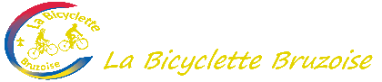

Historique
Depuis plus de cinquante ans, la Bicyclette Bruzoise accompagne les cyclotouristes de Bruz et des environs dans un esprit de convivialité, de sécurité et de découverte.
Repères clés : section cyclisme de loisirs dès 1969, création de l’association en 1980, affiliation FFVélo (n° 3505).